library(Seurat)
library(data.table)
library(Matrix)
library(sparseMatrixStats)data_integration
Batch effect correction pipeline
pre-processing
There are necessary steps before correction– filtering, normalization, identifying highly variable genes, scaling the expression matrix.
load dataset
read_GSE115978 <- function(data_path) {
cat("Reading GSE115978 dataset using fread...\n")
counts_path <- file.path(data_path, "GSE115978", "GSE115978_counts.csv.gz")
anno_path <- file.path(data_path, "GSE115978", "GSE115978_cell.annotations.csv.gz")
counts_dt <- fread(counts_path)
gene_names <- counts_dt[[1]]
counts_mat <- as.data.frame(counts_dt[, -1, with = FALSE])
rownames(counts_mat) <- gene_names
anno_df <- fread(anno_path)
anno_df <- as.data.frame(anno_df)
rownames(anno_df) <- anno_df$cells
common_cells <- intersect(colnames(counts_mat), anno_df$cells)
counts_mat <- counts_mat[, common_cells, drop = FALSE]
anno_df <- anno_df[common_cells, , drop = FALSE]
seurat_obj <- CreateSeuratObject(
counts = counts_mat,
meta.data = anno_df,
project = "GSE115978"
)
seurat_obj$batch <- "GSE115978"
seurat_obj$study <- "GSE115978"
cat("GSE115978:", ncol(seurat_obj), "cells,", nrow(seurat_obj), "genes\n")
return(seurat_obj)
}
data_path<- "C:/Users/Administrator/Downloads"
reads_GSE115978<-read_GSE115978(data_path)Reading GSE115978 dataset using fread...Warning: Feature names cannot have underscores ('_'), replacing with dashes
('-')Warning: Data is of class data.frame. Coercing to dgCMatrix.GSE115978: 7186 cells, 23686 geneshead(reads_GSE115978$nFeature_RNA,3) # colSums(counts>0) non-zero entries cy78_CD45_neg_1_B04_S496_comb
8094
cy79_p4_CD45_neg_PDL1_neg_E11_S1115_comb
2022
CY88_5_B10_S694_comb
5141 head(reads_GSE115978$nCount_RNA,3) # colSums(counts) total number of UMI counts per cell cy78_CD45_neg_1_B04_S496_comb
357919
cy79_p4_CD45_neg_PDL1_neg_E11_S1115_comb
5727
CY88_5_B10_S694_comb
139218 hist(reads_GSE115978$nCount_RNA,
breaks = 100)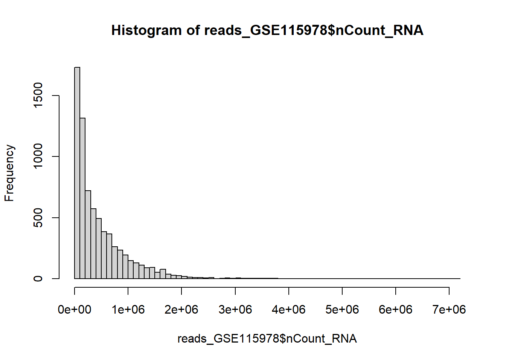
Calculate for each cell its total number of reads. It is zero-inflated because of dropout event,commonly seen in sc RNA analysis. AND this histogram shows a strong right-skewed distribution. Normally, we do log-transform to reduce skewness.
::: {.cell}
```{.r .cell-code}
hist(log10(reads_GSE115978$nCount_RNA),breaks=100)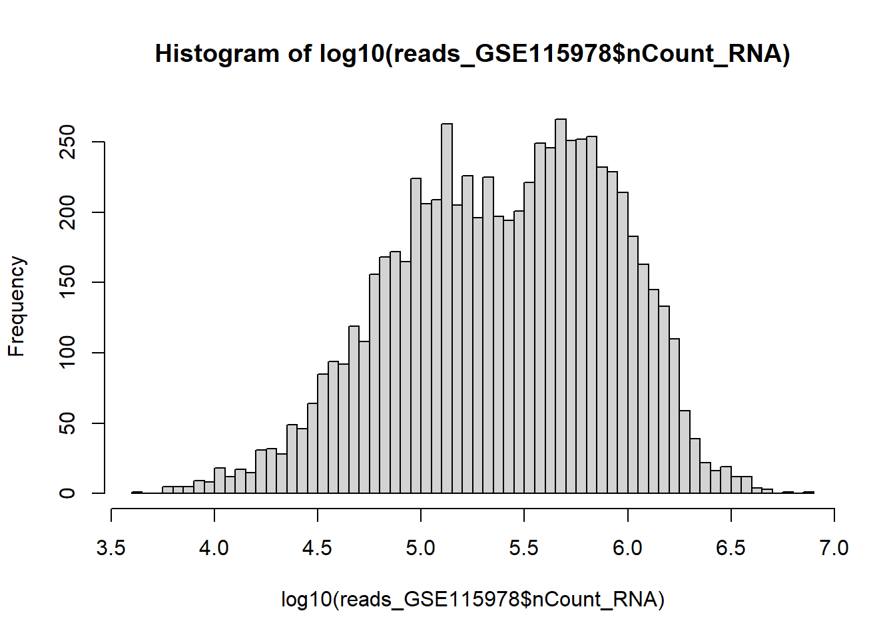
:::
#GSE115978
seurat_115978 <- NormalizeData(object = reads_GSE115978, normalization.method = "LogNormalize", scale.factor = 10000)Normalizing layer: countscount_matrix<-GetAssayData(reads_GSE115978, slot = "counts")Warning: The `slot` argument of `GetAssayData()` is deprecated as of SeuratObject 5.0.0.
ℹ Please use the `layer` argument instead.frac <- t(t(count_matrix) / reads_GSE115978$nCount_RNA)
plot (rowMeans(frac),rowVars(frac)/rowMeans(frac),log="xy",cex=.2,col=adjustcolor("black",alpha=.2))Warning in xy.coords(x, y, xlabel, ylabel, log): 750 x values <= 0 omitted from
logarithmic plotntilde<-1/mean(1/ reads_GSE115978$nCount_RNA)
abline(h=1/ntilde,col="purple")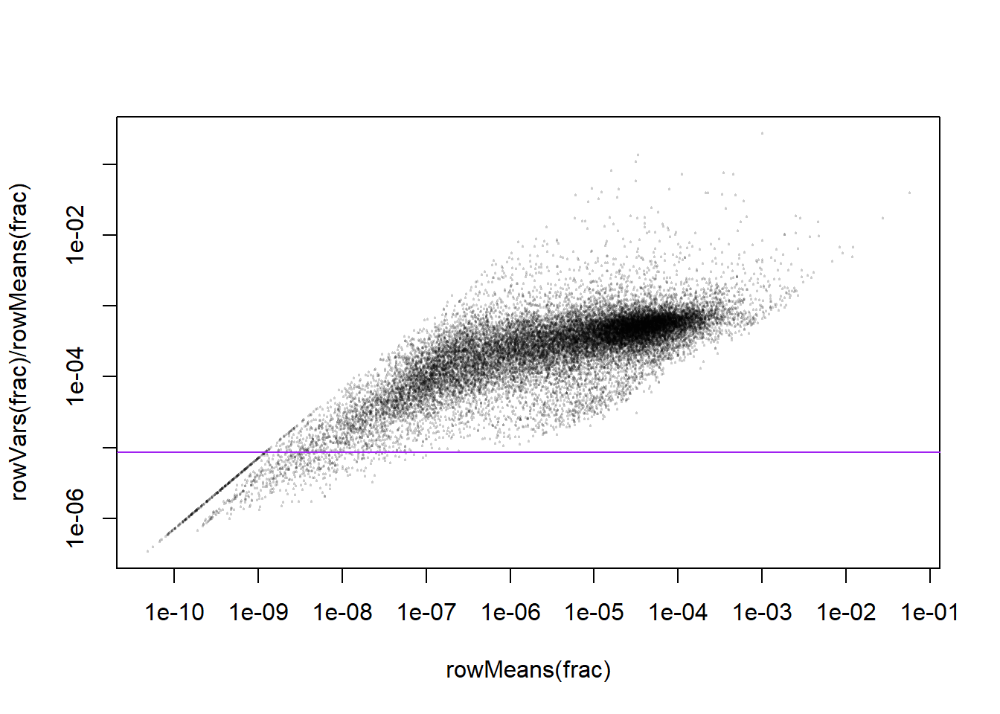
seurat_115978 <- FindVariableFeatures(object = seurat_115978, selection.method = "vst",
nfeatures = 2000
)head(VariableFeatures(seurat_115978))[1] "COL3A1" "DCN" "COL1A1" "COL1A2" "SPP1" "ELK2AP"seurat_115978 <- ScaleData(
seurat_115978, features = VariableFeatures(seurat_115978)
)Centering and scaling data matrixDimension Reduction
#mat <- t(GetAssayData(seurat_115978, slot = "scale.data"))
#pca <- irlba::prcomp_irlba( mat, n=20, center=TRUE, scale.=TRUE )
#plot(pca$x[,1],pca$x[,2],cex=.1,col="#00000030",asp=1,ylim=c(-20,20))
seurat_115978 <- RunPCA(
seurat_115978,
features = VariableFeatures(seurat_115978),
npcs = 20,
verbose = FALSE
)
DimPlot(seurat_115978, reduction = "pca", dims = c(1,2), group.by = "samples")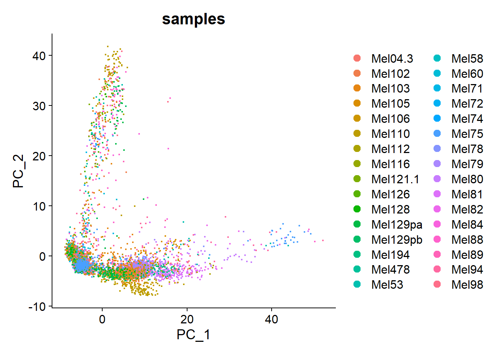
#uwot::umap(pca$x)->umap
#plot(umap,cex=.1,col="#00000030",asp=1)
seurat_115978 <- RunUMAP(
seurat_115978, dims = 1:20,
umap.method = "uwot", n.neighbors = 15, min.dist = 0.3, seed.use = 42
)Warning: The default method for RunUMAP has changed from calling Python UMAP via reticulate to the R-native UWOT using the cosine metric
To use Python UMAP via reticulate, set umap.method to 'umap-learn' and metric to 'correlation'
This message will be shown once per session09:31:57 UMAP embedding parameters a = 0.9922 b = 1.11209:31:57 Read 7186 rows and found 20 numeric columns09:31:57 Using Annoy for neighbor search, n_neighbors = 1509:31:57 Building Annoy index with metric = cosine, n_trees = 500% 10 20 30 40 50 60 70 80 90 100%[----|----|----|----|----|----|----|----|----|----|**************************************************|
09:31:58 Writing NN index file to temp file C:\Users\Administrator\AppData\Local\Temp\RtmpIx5CN7\file51082436c86
09:31:58 Searching Annoy index using 1 thread, search_k = 1500
09:32:00 Annoy recall = 100%
09:32:00 Commencing smooth kNN distance calibration using 1 thread with target n_neighbors = 15
09:32:01 Found 3 connected components, falling back to 'spca' initialization with init_sdev = 1
09:32:01 Using 'irlba' for PCA
09:32:01 PCA: 2 components explained 34.92% variance
09:32:01 Scaling init to sdev = 1
09:32:01 Commencing optimization for 500 epochs, with 159498 positive edges
09:32:01 Using rng type: pcg
09:32:21 Optimization finishedDimPlot(seurat_115978, reduction = "umap", group.by = "samples")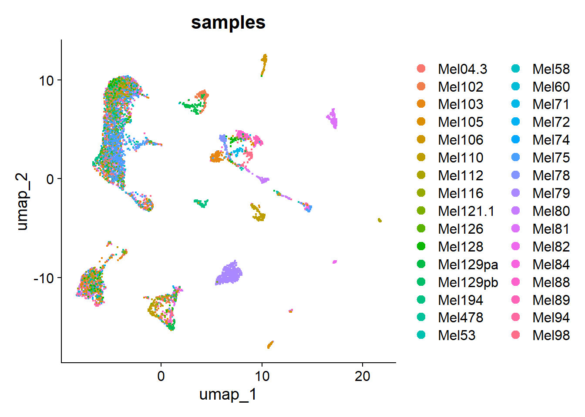
DimPlot(seurat_115978, reduction = "umap", group.by = "treatment.group")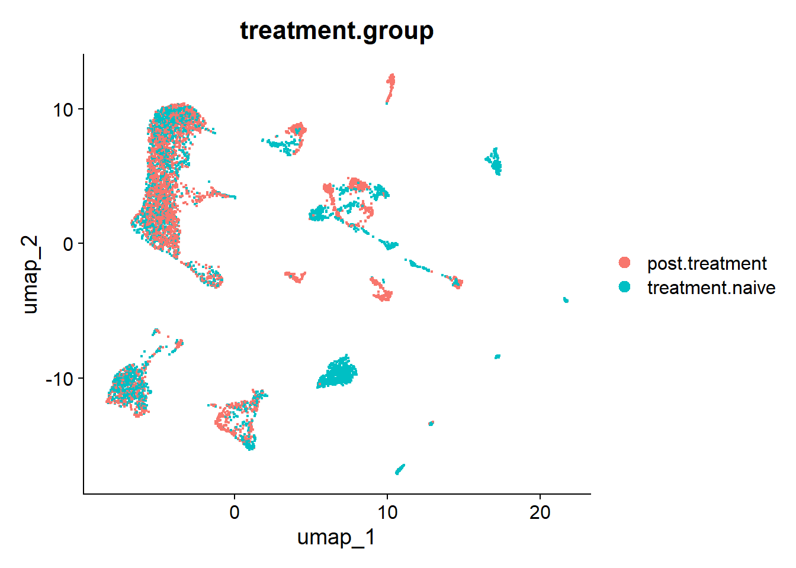
The UMAP plot colored by treatment group shows good mixing— no obvious treatment-related batch effect.
DimPlot(seurat_115978, reduction = "umap", group.by = "cell.types")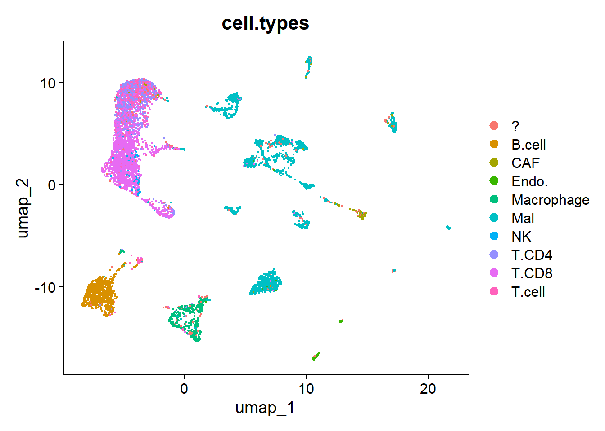
Major lineages like T and B cells are separated, but T-cell subtypes (T.cell and T.CD4 and T.CD8 overlap) are hard to tell, which is biologically sensible. This plot also shows that the differences within each lineage are more subtle.
FeaturePlot(seurat_115978, features=c("CD3D","IL7R","CD8A","NKG7","MS4A1","LYZ","EPCAM","PECAM1","COL1A1"))Warning: The `slot` argument of `FetchData()` is deprecated as of SeuratObject 5.0.0.
ℹ Please use the `layer` argument instead.
ℹ The deprecated feature was likely used in the Seurat package.
Please report the issue at <https://github.com/satijalab/seurat/issues>.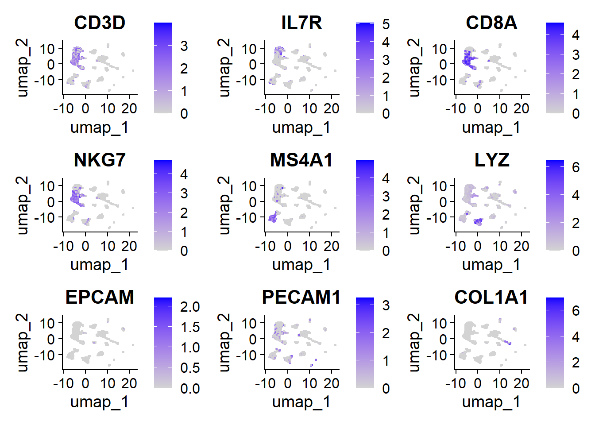
canonical lineage markers.
#Unsupervised clustering, graph-based community detection
seurat_obj <- FindNeighbors(seurat_115978, dims = 1:20, k.param = 20)Computing nearest neighbor graphComputing SNN##normal matrix
adjm <- as.matrix(seurat_obj@graphs$RNA_nn)
head(adjm[, 1:5]) cy78_CD45_neg_1_B04_S496_comb
cy78_CD45_neg_1_B04_S496_comb 1
cy79_p4_CD45_neg_PDL1_neg_E11_S1115_comb 0
CY88_5_B10_S694_comb 0
cy79_p1_CD45_neg_PDL1_pos_AS_C1_R1_F07_S67_comb 0
cy78_CD45_neg_3_H06_S762_comb 0
cy79_p1_CD45_neg_PDL1_pos_AS_C1_R1_G01_S73_comb 0
cy79_p4_CD45_neg_PDL1_neg_E11_S1115_comb
cy78_CD45_neg_1_B04_S496_comb 0
cy79_p4_CD45_neg_PDL1_neg_E11_S1115_comb 1
CY88_5_B10_S694_comb 0
cy79_p1_CD45_neg_PDL1_pos_AS_C1_R1_F07_S67_comb 0
cy78_CD45_neg_3_H06_S762_comb 0
cy79_p1_CD45_neg_PDL1_pos_AS_C1_R1_G01_S73_comb 0
CY88_5_B10_S694_comb
cy78_CD45_neg_1_B04_S496_comb 0
cy79_p4_CD45_neg_PDL1_neg_E11_S1115_comb 0
CY88_5_B10_S694_comb 1
cy79_p1_CD45_neg_PDL1_pos_AS_C1_R1_F07_S67_comb 0
cy78_CD45_neg_3_H06_S762_comb 0
cy79_p1_CD45_neg_PDL1_pos_AS_C1_R1_G01_S73_comb 0
cy79_p1_CD45_neg_PDL1_pos_AS_C1_R1_F07_S67_comb
cy78_CD45_neg_1_B04_S496_comb 0
cy79_p4_CD45_neg_PDL1_neg_E11_S1115_comb 0
CY88_5_B10_S694_comb 0
cy79_p1_CD45_neg_PDL1_pos_AS_C1_R1_F07_S67_comb 1
cy78_CD45_neg_3_H06_S762_comb 0
cy79_p1_CD45_neg_PDL1_pos_AS_C1_R1_G01_S73_comb 0
cy78_CD45_neg_3_H06_S762_comb
cy78_CD45_neg_1_B04_S496_comb 0
cy79_p4_CD45_neg_PDL1_neg_E11_S1115_comb 0
CY88_5_B10_S694_comb 0
cy79_p1_CD45_neg_PDL1_pos_AS_C1_R1_F07_S67_comb 0
cy78_CD45_neg_3_H06_S762_comb 1
cy79_p1_CD45_neg_PDL1_pos_AS_C1_R1_G01_S73_comb 0##sparse matrix
adjm_sparse <- seurat_obj@graphs$RNA_nn
head(adjm_sparse[, 1:5])6 x 5 sparse Matrix of class "dgCMatrix"
cy78_CD45_neg_1_B04_S496_comb
cy78_CD45_neg_1_B04_S496_comb 1
cy79_p4_CD45_neg_PDL1_neg_E11_S1115_comb .
CY88_5_B10_S694_comb .
cy79_p1_CD45_neg_PDL1_pos_AS_C1_R1_F07_S67_comb .
cy78_CD45_neg_3_H06_S762_comb .
cy79_p1_CD45_neg_PDL1_pos_AS_C1_R1_G01_S73_comb .
cy79_p4_CD45_neg_PDL1_neg_E11_S1115_comb
cy78_CD45_neg_1_B04_S496_comb .
cy79_p4_CD45_neg_PDL1_neg_E11_S1115_comb 1
CY88_5_B10_S694_comb .
cy79_p1_CD45_neg_PDL1_pos_AS_C1_R1_F07_S67_comb .
cy78_CD45_neg_3_H06_S762_comb .
cy79_p1_CD45_neg_PDL1_pos_AS_C1_R1_G01_S73_comb .
CY88_5_B10_S694_comb
cy78_CD45_neg_1_B04_S496_comb .
cy79_p4_CD45_neg_PDL1_neg_E11_S1115_comb .
CY88_5_B10_S694_comb 1
cy79_p1_CD45_neg_PDL1_pos_AS_C1_R1_F07_S67_comb .
cy78_CD45_neg_3_H06_S762_comb .
cy79_p1_CD45_neg_PDL1_pos_AS_C1_R1_G01_S73_comb .
cy79_p1_CD45_neg_PDL1_pos_AS_C1_R1_F07_S67_comb
cy78_CD45_neg_1_B04_S496_comb .
cy79_p4_CD45_neg_PDL1_neg_E11_S1115_comb .
CY88_5_B10_S694_comb .
cy79_p1_CD45_neg_PDL1_pos_AS_C1_R1_F07_S67_comb 1
cy78_CD45_neg_3_H06_S762_comb .
cy79_p1_CD45_neg_PDL1_pos_AS_C1_R1_G01_S73_comb .
cy78_CD45_neg_3_H06_S762_comb
cy78_CD45_neg_1_B04_S496_comb .
cy79_p4_CD45_neg_PDL1_neg_E11_S1115_comb .
CY88_5_B10_S694_comb .
cy79_p1_CD45_neg_PDL1_pos_AS_C1_R1_F07_S67_comb .
cy78_CD45_neg_3_H06_S762_comb 1
cy79_p1_CD45_neg_PDL1_pos_AS_C1_R1_G01_S73_comb .colSums(adjm_sparse) -> vertex_degrees
hist( vertex_degrees,breaks=30 )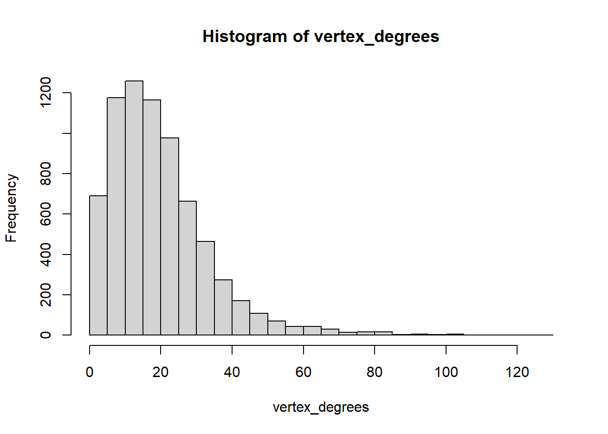
A few cells have very high degrees– these might be hub nodes cells with very low degrees may be isolated in te data, could be labeled as outliers.
seurat_obj@graphs$RNA_nn is a symmetric adjacency
we check hub cells which
mean_deg <- mean(vertex_degrees)
sd_deg <- sd(vertex_degrees)
hub_threshold <- mean_deg + 3 * sd_deg
hub_cells <- which(vertex_degrees > hub_threshold)
cat("The number of Hub cells :", length(hub_cells), "\n")The number of Hub cells : 129 hist(vertex_degrees, breaks=50, main="Degree distribution with thresholds", xlab="Degree")
abline(v = hub_threshold, col="red", lwd=2, lty=2)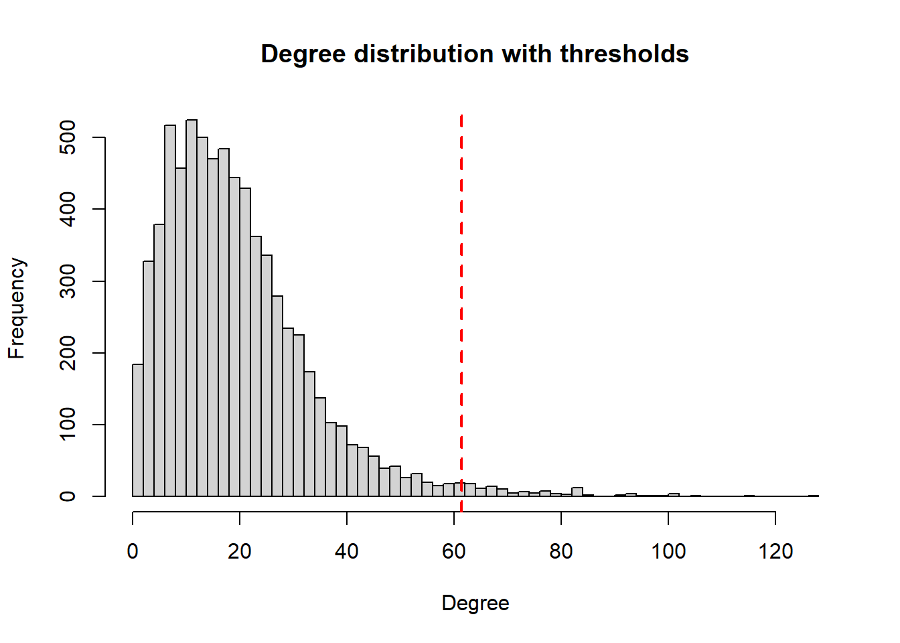
undirected graph
pca_matrix <- seurat_obj@reductions$pca@cell.embeddings
head(pca_matrix) PC_1 PC_2 PC_3
cy78_CD45_neg_1_B04_S496_comb 7.757568 -4.815407 -7.825449
cy79_p4_CD45_neg_PDL1_neg_E11_S1115_comb 7.637491 -1.780396 -8.320057
CY88_5_B10_S694_comb 5.092996 -3.291351 -6.988809
cy79_p1_CD45_neg_PDL1_pos_AS_C1_R1_F07_S67_comb 10.583775 -1.268354 -8.901335
cy78_CD45_neg_3_H06_S762_comb 9.320724 -3.336769 -7.876569
cy79_p1_CD45_neg_PDL1_pos_AS_C1_R1_G01_S73_comb 11.137878 -2.044551 -9.909791
PC_4 PC_5
cy78_CD45_neg_1_B04_S496_comb -8.4726691 -2.9296714
cy79_p4_CD45_neg_PDL1_neg_E11_S1115_comb 3.7936347 -1.0521534
CY88_5_B10_S694_comb 2.6271141 -1.7388752
cy79_p1_CD45_neg_PDL1_pos_AS_C1_R1_F07_S67_comb 3.0858221 -0.2944948
cy78_CD45_neg_3_H06_S762_comb 0.1114288 -3.4952191
cy79_p1_CD45_neg_PDL1_pos_AS_C1_R1_G01_S73_comb 4.1340678 -0.4131963
PC_6 PC_7
cy78_CD45_neg_1_B04_S496_comb 7.7260618 4.6757712
cy79_p4_CD45_neg_PDL1_neg_E11_S1115_comb 1.1980493 1.2223539
CY88_5_B10_S694_comb 3.9080013 3.2654034
cy79_p1_CD45_neg_PDL1_pos_AS_C1_R1_F07_S67_comb -1.2088186 -1.1015186
cy78_CD45_neg_3_H06_S762_comb 7.8290884 4.8168332
cy79_p1_CD45_neg_PDL1_pos_AS_C1_R1_G01_S73_comb -0.2757132 0.4911571
PC_8 PC_9
cy78_CD45_neg_1_B04_S496_comb -6.5844264 10.8176718
cy79_p4_CD45_neg_PDL1_neg_E11_S1115_comb 7.9090228 -0.3352334
CY88_5_B10_S694_comb -0.5079443 -2.1169324
cy79_p1_CD45_neg_PDL1_pos_AS_C1_R1_F07_S67_comb 11.1895731 0.5785861
cy78_CD45_neg_3_H06_S762_comb -6.0242500 -0.1855716
cy79_p1_CD45_neg_PDL1_pos_AS_C1_R1_G01_S73_comb 12.0975556 0.7604812
PC_10 PC_11 PC_12
cy78_CD45_neg_1_B04_S496_comb -2.2210212 2.365666 4.5648192
cy79_p4_CD45_neg_PDL1_neg_E11_S1115_comb 0.4601099 -3.345261 -1.3828755
CY88_5_B10_S694_comb 1.4811888 2.330527 -0.2079382
cy79_p1_CD45_neg_PDL1_pos_AS_C1_R1_F07_S67_comb 0.8494759 -3.350415 1.4911046
cy78_CD45_neg_3_H06_S762_comb 2.4267101 2.421964 4.5126752
cy79_p1_CD45_neg_PDL1_pos_AS_C1_R1_G01_S73_comb 0.4404555 -3.776621 2.3118006
PC_13 PC_14
cy78_CD45_neg_1_B04_S496_comb -0.8441064 -1.5232913
cy79_p4_CD45_neg_PDL1_neg_E11_S1115_comb -2.5263964 0.1789084
CY88_5_B10_S694_comb -0.3470690 -1.7058970
cy79_p1_CD45_neg_PDL1_pos_AS_C1_R1_F07_S67_comb -1.6749182 0.3978231
cy78_CD45_neg_3_H06_S762_comb 3.3313742 0.3038922
cy79_p1_CD45_neg_PDL1_pos_AS_C1_R1_G01_S73_comb -3.6045924 0.7901843
PC_15 PC_16
cy78_CD45_neg_1_B04_S496_comb -1.08921550 1.4890489
cy79_p4_CD45_neg_PDL1_neg_E11_S1115_comb 0.03415717 0.9445262
CY88_5_B10_S694_comb -0.55591907 -0.3232698
cy79_p1_CD45_neg_PDL1_pos_AS_C1_R1_F07_S67_comb -3.07852643 1.4573855
cy78_CD45_neg_3_H06_S762_comb 0.96577639 -1.0245448
cy79_p1_CD45_neg_PDL1_pos_AS_C1_R1_G01_S73_comb -1.75521706 1.2766905
PC_17 PC_18
cy78_CD45_neg_1_B04_S496_comb 3.462213121 -0.92565924
cy79_p4_CD45_neg_PDL1_neg_E11_S1115_comb 0.001726959 0.09885860
CY88_5_B10_S694_comb 0.483203838 -1.01718699
cy79_p1_CD45_neg_PDL1_pos_AS_C1_R1_F07_S67_comb -2.614309239 0.08287981
cy78_CD45_neg_3_H06_S762_comb 4.358801472 -3.37882629
cy79_p1_CD45_neg_PDL1_pos_AS_C1_R1_G01_S73_comb -1.508694965 -0.75657241
PC_19 PC_20
cy78_CD45_neg_1_B04_S496_comb -5.0439151 -0.6163044
cy79_p4_CD45_neg_PDL1_neg_E11_S1115_comb 2.0303923 -0.9019998
CY88_5_B10_S694_comb -2.8351141 -0.9434532
cy79_p1_CD45_neg_PDL1_pos_AS_C1_R1_F07_S67_comb -0.9031245 2.9044848
cy78_CD45_neg_3_H06_S762_comb -4.1899826 1.0324337
cy79_p1_CD45_neg_PDL1_pos_AS_C1_R1_G01_S73_comb 1.5146982 -0.5052203library(FNN)
nn <- get.knn(pca_matrix, k = 20)$nn.index
head(nn) [,1] [,2] [,3] [,4] [,5] [,6] [,7] [,8] [,9] [,10] [,11] [,12] [,13] [,14]
[1,] 473 480 25 1049 24 447 270 874 1146 399 620 864 35 6702
[2,] 572 1045 786 45 516 253 567 1042 423 644 863 1079 1137 502
[3,] 150 655 898 708 271 2944 618 547 414 897 14 594 1096 380
[4,] 453 546 925 891 995 3310 539 1102 207 692 753 911 904 127
[5,] 965 99 1014 1029 434 415 739 303 936 570 325 796 464 810
[6,] 911 362 349 1057 1033 528 1005 645 714 102 95 1038 1140 800
[,15] [,16] [,17] [,18] [,19] [,20]
[1,] 926 963 3272 301 191 4753
[2,] 64 234 511 260 222 175
[3,] 855 513 1011 614 136 1106
[4,] 768 388 726 98 645 329
[5,] 638 529 499 278 1036 36
[6,] 925 891 41 218 135 918library(Matrix)
adjm_directed <- sparseMatrix(
i = rep(1:nrow(nn), ncol(nn)),
j = as.vector(nn),
x = 1,
dims = c(nrow(nn), nrow(nn))
)
adjm_undirected <- adjm_directed + t(adjm_directed)
adjm_undirected[adjm_undirected > 1] <- 1
vertex_degrees_undirected <- rowSums(adjm_undirected)
hist(vertex_degrees_undirected,breaks=50)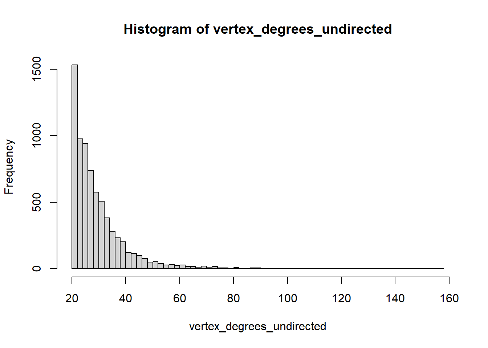
The minimum is 20 but a vertex can habe much more neighbors due to non-mutual neighboprhood relations.
Now we use the igraph package to build this graph and perform modularity clustering
igraph::graph_from_adjacency_matrix(adjm_undirected , mode="undirected" ) -> nn_graph
nn_graphIGRAPH 5af7aa2 U--- 7186 107911 --
+ edges from 5af7aa2:
[1] 1-- 24 1-- 25 1-- 35 1-- 191 1-- 270 1-- 301 1-- 399 1-- 447 1-- 473
[10] 1-- 480 1-- 620 1-- 653 1-- 864 1-- 874 1-- 926 1-- 963 1--1049 1--1146
[19] 1--3272 1--4753 1--4850 1--6702 2-- 45 2-- 64 2-- 143 2-- 175 2-- 200
[28] 2-- 222 2-- 234 2-- 253 2-- 260 2-- 300 2-- 355 2-- 411 2-- 423 2-- 502
[37] 2-- 511 2-- 516 2-- 567 2-- 572 2-- 592 2-- 625 2-- 633 2-- 644 2-- 773
[46] 2-- 786 2-- 863 2--1028 2--1042 2--1045 2--1079 2--1137 2--3327 2--3648
[55] 2--3838 3-- 14 3-- 136 3-- 150 3-- 271 3-- 380 3-- 414 3-- 513 3-- 547
[64] 3-- 594 3-- 614 3-- 618 3-- 655 3-- 708 3-- 713 3-- 855 3-- 897 3-- 898
[73] 3--1011 3--1096 3--1106 3--2944 4-- 26 4-- 98 4-- 127 4-- 207 4-- 329
+ ... omitted several edgesigraph::cluster_leiden( nn_graph, objective_function="modularity" ) -> clustering
str(clustering)Class 'communities' hidden list of 5
$ membership : num [1:7186] 1 2 1 2 1 2 2 1 2 3 ...
$ nb_clusters: num 21
$ quality : num 0.824
$ algorithm : chr "leiden"
$ vcount : num 7186seurat_115978$leiden_clusters <- factor(clustering$membership)
DimPlot(seurat_115978, reduction = "umap", group.by = "leiden_clusters")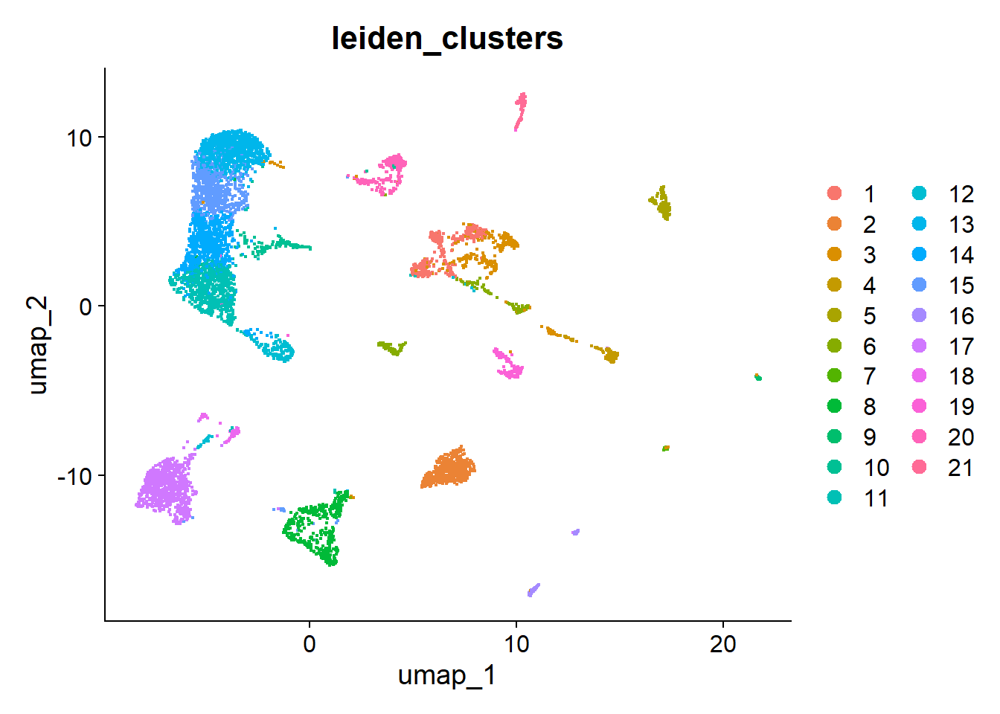
stopifnot( all(adjm_undirected@x!=0) ) #pass
library(tibble)
adjm_triplet <- as(adjm_undirected, "dgTMatrix")'as(<dgCMatrix>, "dgTMatrix")' is deprecated.
Use 'as(., "TsparseMatrix")' instead.
See help("Deprecated") and help("Matrix-deprecated").edge_table <-tibble( from=adjm_triplet@i+1, to=adjm_triplet@j+1 ) %>%
dplyr::filter(.data$from < .data$to)
head(edge_table)# A tibble: 6 × 2
from to
<dbl> <dbl>
1 3 14
2 8 14
3 13 18
4 14 20
5 14 21
6 1 24library(dplyr)
Attaching package: 'dplyr'The following object is masked from 'package:matrixStats':
countThe following objects are masked from 'package:data.table':
between, first, lastThe following objects are masked from 'package:stats':
filter, lagThe following objects are masked from 'package:base':
intersect, setdiff, setequal, unionedge_table_clustered <- edge_table %>%
mutate(
from_cluster = clustering$membership[from],
to_cluster = clustering$membership[to]
)
head(edge_table_clustered)# A tibble: 6 × 4
from to from_cluster to_cluster
<dbl> <dbl> <dbl> <dbl>
1 3 14 1 1
2 8 14 1 1
3 13 18 5 5
4 14 20 1 1
5 14 21 1 1
6 1 24 1 1check the quality of the Leiden clustering
##edges across different clusters
sum( edge_table_clustered$from_cluster != edge_table_clustered$to_cluster )[1] 9540##proportion of edges inside clusters
mean( edge_table_clustered$from_cluster == edge_table_clustered$to_cluster ) -> fraction_inner
fraction_inner[1] 0.911590591.2% of edges are internal– a good clustering quality.
edge_table %>%
mutate( to = sample(to) ) %>%
mutate(
from_cluster = clustering$membership[ from ],
to_cluster = clustering$membership[ to ] ) %>%
summarise( mean( from_cluster == to_cluster ) )# A tibble: 1 × 1
`mean(from_cluster == to_cluster)`
<dbl>
1 0.0868randomly shuffle the “to” column, and calculate the fraction of edges that under this random permutation, still connect nodes wthin the same cluster. If you shuffle many times and take the average, you get a stable estimate of the expected fraction of within-cluster edges under randomness.
This average is called J0.
how much connectivity (total degree) each cluster holds.
tapply( vertex_degrees_undirected, clustering$membership, sum ) -> degree_sums
degree_sums 1 2 3 4 5 6 7 8 9 10 11 12 13
11369 14784 9646 2152 3927 5646 771 11803 999 3683 22730 4976 33175
14 15 16 17 18 19 20 21
24363 21750 2524 25126 2496 3667 7377 2854 sum( degree_sums^2 ) / sum( degree_sums )^2 -> expected_fraction_inner
expected_fraction_inner[1] 0.08750604fraction_inner - expected_fraction_inner[1] 0.8240845clustering$quality[1] 0.8240876